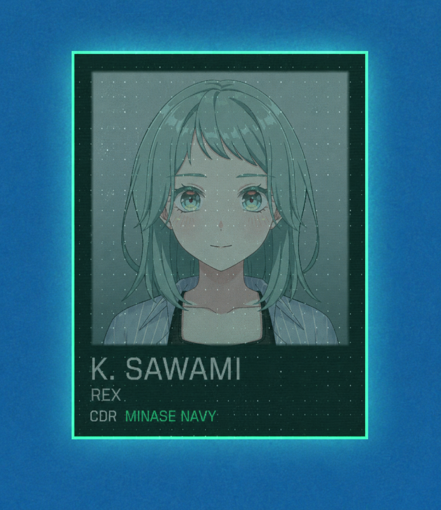

ALING
/ SOUND ROOM
VOL. 01 — ODD DICE

01 / PERSONAL COLLECTION
♪
A LITTLE SPACE FOR MUSIC
Odd Dice
.
给自己留一首歌的时间。
单曲 / SINGLE
MP3 · 256 KBPS
播放进度
0:00
--:--
↶
10
▶
播放
↷
10
↻
音量
音量
80%
点击播放，开始聆听。
此浏览器的音量由设备控制，请使用手机音量键。
JUST PRESS PLAY.
戴上耳机，慢慢听。